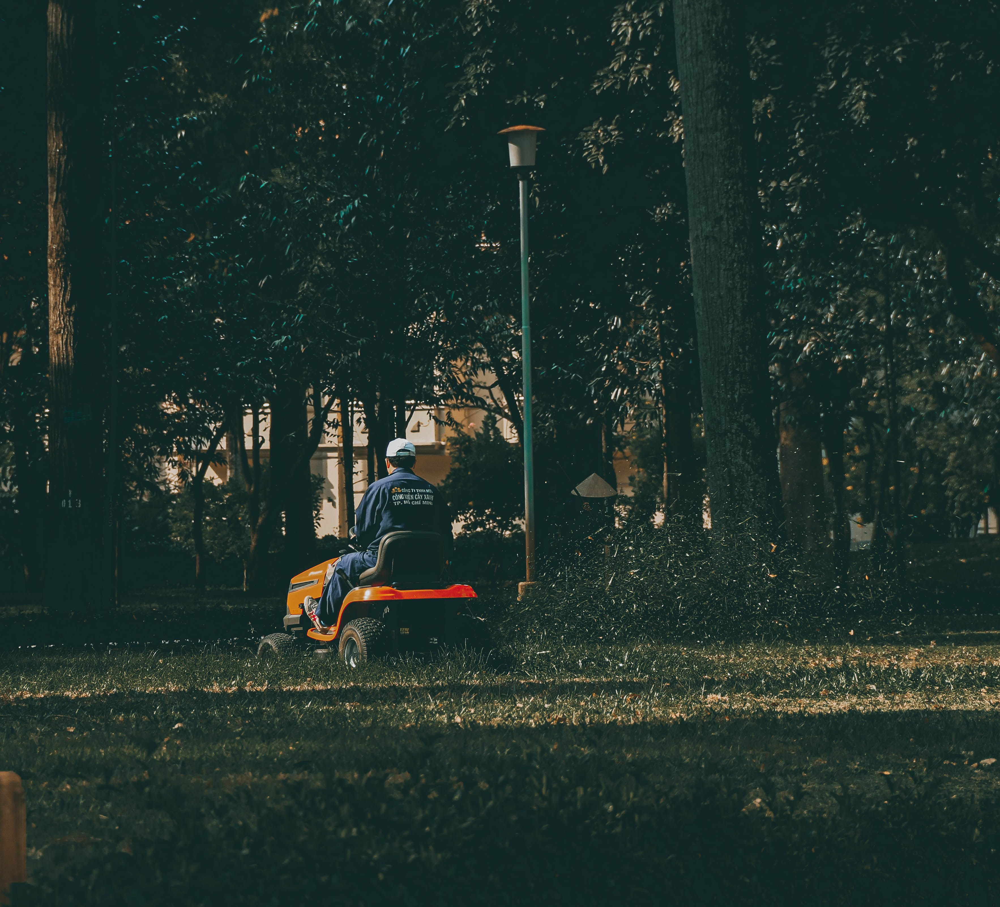

À propos de nous
La passion de la nature au service de vos espaces verts.
La passion de la nature au service de vos espaces verts.
Louis Dumarché, 17 ans, est un jeune paysagiste passionné et lycéen à Briacé, au Loroux-Bottereau. Depuis toujours attiré par la nature et les espaces extérieurs, il met son sérieux, sa créativité et son sens du détail au service de chaque projet.
À travers Dumarché Paysage, son objectif est d'accompagner particuliers et professionnels dans la création, l'entretien et l'embellissement de leurs jardins et espaces verts. Chaque intervention est réalisée avec soin, dans le respect de vos attentes et de l'environnement.
Travaillons ensembleQu'il s'agisse d'un entretien régulier, d'un aménagement paysager ou de conseils personnalisés, je m'engage à fournir un travail de qualité.
Comprendre vos attentes avant tout pour un résultat qui vous ressemble vraiment.
Le respect des délais et des rendez-vous convenus, à chaque intervention.
Un travail soigné et appliqué, du plus petit geste à la finition.
Des interventions respectueuses de la nature et de votre cadre de vie.
« Parce qu'un jardin est un lieu de vie, Dumarché Paysage met tout en œuvre pour créer des espaces harmonieux, durables et agréables à vivre. »
Louis DumarchéDe la première visite au résultat final, je privilégie l'écoute, la ponctualité et la satisfaction de mes clients. Chaque jardin est unique et mérite une attention particulière.

Contactez-moi pour discuter de votre projet, sans engagement.
Prendre rendez-vous